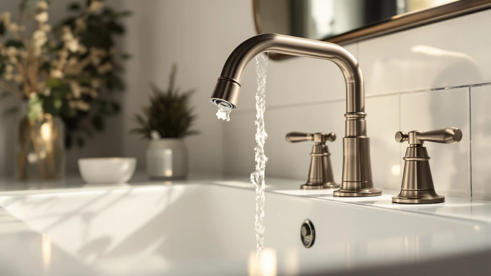

Quick Answer
Quick answer from this Moen Eva oil rubbed review: it's a solid pick if you already want a brass, oil-rubbed bronze two-handle faucet, but you're paying about $10 over the brushed nickel version of the same design for that finish alone.
Our pick: Moen Eva Oil-Rubbed Bronze Two-Handle, $173.67 Check Price on Amazon
Things to Know Before You Buy
- The two-handle design covered in this Moen Eva oil rubbed review lets you set hot and cold water independently, unlike a single-lever faucet.
- Moen lists the Eva's body material as brass, which typically outlasts the zinc-alloy bodies found on some lower-priced faucets.
- Oil-rubbed bronze costs about $10 more here than the same Eva faucet in brushed nickel, a premium you're paying for looks, not performance.
- Delta's Arvo line, covered further down as an alternative, comes in brushed gold and brushed nickel instead of bronze.
- Every price on this page reflects the listing at the time of publishing and can move with Amazon's own updates.
This Moen Eva oil rubbed review breaks down whether the two-handle faucet earns its $173.67 price against three close alternatives from the same product family. You want a faucet that matches an oil-rubbed bronze bathroom without turning into a maintenance project, and Moen built the Eva around a brass body finished in that dark, warm tone. We compared its listed material, price, and finish against the brushed nickel version of the same Eva line plus two Delta Arvo models, so you can see where the extra cost buys something real and where it only buys a different color.
Two-handle faucets like this one let you set hot and cold independently, a design some households prefer over a single lever once they're used to it. The oil-rubbed bronze finish on the Eva reads as a deep brown with lighter highlights rather than flat black, a look that pairs with other oil-rubbed hardware in the room. At $173.67, it sits close to the Delta Arvo Brushed Gold at $163.71 and its own brushed nickel sibling at $163.19, with the brushed nickel Delta Arvo the cheapest of the four at $150.38. None of these four faucets is a bad buy on paper, so the decision mostly comes down to which finish and brand you'd rather see every time you wash your hands.
Why You Should Trust Us
Ilane Tall covers bathroom hardware for Best Bathroom Faucets and tracks how finishes, valve materials, and installation types affect real households, not spec sheets alone. We don't own a testing lab and don't claim to install every faucet we cover. Instead, we build each review, including this Moen Eva oil rubbed review, from the manufacturer's own listed specifications, current Amazon pricing, and patterns that repeat across verified buyer feedback. When a claim can't be confirmed against the product listing itself, we leave it out rather than guess. That standard applies equally to the faucet you're reading about and to every alternative we mention next to it.
Our Research Experience
We didn't install this faucet in a bathroom to write this Moen Eva oil rubbed review. What we did is pull the listed material, finish, and price directly from Moen's product listing and cross-check them against the three closest alternatives Amazon sells alongside it. Where owners have posted verified reviews of the Eva or the Arvo, we looked for patterns that repeat across many buyers rather than one-off complaints, since a single bad unit says less about a design than five reviewers reporting the same issue. That research-based approach tells you what the faucet is built from and how it's priced against its closest competitors, without pretending we ran it under a sink for six months.
Overview & Specs

Moen Eva Oil-Rubbed Bronze Two-Handle
What we like
- Brass body construction, generally more durable than the zinc-alloy bodies on cheaper faucets
- Oil-rubbed bronze finish with genuine light-and-dark variation instead of a flat black coating
- Two-handle design for independent hot and cold control
- Part of Moen's established Eva line, also sold in brushed nickel, so it isn't an unproven model
Flaws but not dealbreakers
- Costs about $10 more than the brushed nickel version of the same faucet
- Two-handle controls take a bit longer to install and adjust than a single-handle faucet
- No published rating or review count on this specific listing to weigh against buyer feedback
| Material | Brass + finish |
| Size | 0.5 |
This section of the Moen Eva oil rubbed review looks at the model on its own, before comparing it against the alternatives below. Moen's spec sheet lists the Eva's body material as brass with an applied finish, a more durable construction than the all-zinc bodies on entry-level faucets. The oil-rubbed bronze coating over that brass base gives the faucet its dark, warm color, with the kind of subtle light-and-dark variation you'd expect from a hand-applied finish rather than one flat tone.
At $173.67, this is the most expensive of the four faucets covered here, a gap that comes almost entirely from the bronze finish rather than any difference in the underlying hardware. The two-handle layout gives you separate controls for hot and cold water, which suits anyone who wants independent temperature control over the single lever on a minimalist faucet. If your bathroom's other hardware, towel bars, drawer pulls, mirror frame, already leans dark bronze or black, this faucet matches that palette instead of standing apart from it. Swap the finish to brushed nickel and you get the same underlying faucet for less money, which is worth remembering if the bronze color is the only reason you're drawn to this specific listing.
What We Liked
The clearest strength in this Moen Eva oil rubbed review is the material choice. Moen lists the body as brass, a metal that typically holds up better over years of daily use than the zinc-alloy bodies found in cheaper two-handle faucets. The oil-rubbed bronze finish itself reads as a genuine dark brown with lighter highlights where light catches the surface, not a flat, uniform black, which is a common complaint about lower-quality bronze-look coatings. Two-handle controls also let you dial in a precise temperature by feel, something people who grew up with older faucets tend to prefer. At $173.67, the Eva isn't the cheapest option among its own alternatives, but the brass-and-bronze combination puts it in a different material tier than faucets priced well below $100. That tier matters most if you're already committing to bronze or black hardware elsewhere in the room and don't want the faucet to be the weak link.
What Could Be Better
This Moen Eva oil rubbed review wouldn't be complete without the downsides. The oil-rubbed bronze finish costs a real premium: about $10 more than the same Eva faucet in brushed nickel, and finish is largely a personal preference rather than a functional upgrade. Two-handle designs also take longer to install and adjust than single-handle faucets, since you're setting two separate valves instead of one lever. And because Moen doesn't publish a current rating or review count for this specific listing, you're relying on the brand's broader reputation and verified reviews on similar Eva finishes rather than data tied to this exact bronze version. If a lower price matters more than finish, the brushed nickel Eva or the Delta Arvo Brushed Nickel closes that gap for $150.38, and our best bathroom faucets under $200 roundup covers more options in this range. None of these gaps rule the Eva out, but they're worth weighing against how much the bronze finish actually matters to you before you check out.
Who Is It For?
This Moen Eva oil rubbed review points to one clear buyer: someone furnishing a bathroom with black or dark bronze hardware, cabinet pulls, towel bars, mirror frames, who wants the faucet to match rather than clash. It also suits anyone replacing an existing two-handle faucet who wants to keep that same control style rather than switching to single-handle. It's a weaker fit if you're on a tight budget, since $173.67 buys more faucet than some shoppers need, or if your bathroom's other fixtures are chrome or nickel, where the bronze would stand out for the wrong reasons. If you're still deciding between manufacturers, our bathroom faucet brands guide compares Moen against its competitors in more depth.
Alternatives to Consider
If the Moen Eva oil rubbed review above has you leaning toward a different finish or a lower price, these three alternatives sit in the same bracket. Two are the same Eva design in nickel, and two come from Delta's competing Arvo line. Each one below lists its own price and finish, so you can compare them against the Moen Eva oil rubbed review pick without digging through a separate page.

Editor's Pick
Delta Arvo Brushed Gold Bathroom
A brushed gold finish from a different manufacturer, priced about $10 below the Eva, worth a look if warm metallics fit your bathroom better than bronze.
$163.71
Check Price on Amazon
Best Value
Moen Eva Brushed Nickel Two-Handle
The same Eva build in brushed nickel for about $10 less, the pick if you want Moen's brass body without paying the bronze finish premium.
$163.19
Check Price on Amazon
Premium Choice
Delta Arvo Brushed Nickel Bathroom
The most affordable of the four at $150.38, from Delta rather than Moen, worth comparing if price matters more than sticking with one brand.
$150.38
Check Price on AmazonFrequently Asked Questions
Is the Moen Eva oil rubbed review faucet worth the extra cost over the brushed nickel version?
The oil-rubbed bronze Eva costs about $10 more than the brushed nickel version of the same faucet, and that difference is entirely about finish. Both use the same brass body and two-handle design, so the choice comes down to whether your fixtures and hardware lean warm bronze or cool nickel.
How does the Moen Eva compare to the Delta Arvo alternatives?
The Delta Arvo Brushed Gold and Brushed Nickel models sit close to the Moen Eva in price, between $150.38 and $163.71, while the Eva in oil-rubbed bronze runs $173.67. Moen and Delta are different manufacturers, so the two lines aren't interchangeable, but they compete directly on style and price in this bracket.
Does oil-rubbed bronze show water spots and fingerprints more than other finishes?
Oil-rubbed bronze finishes generally hide water spots and fingerprints better than polished chrome or stainless finishes, since the dark, textured surface doesn't reflect light the same way. Reviewers researching this finish across brands consistently note it as a low-maintenance choice for households that don't want to wipe the faucet down after every use.
Final Verdict
This Moen Eva oil rubbed review comes down to a straightforward trade: about $10 more for oil-rubbed bronze instead of brushed nickel, both built on the same brass Moen design. If your bathroom already leans warm and dark, the bronze version is worth that premium. If you're not tied to a specific finish, the brushed nickel Eva or either Delta Arvo alternative gets you the same two-handle functionality for less. For shoppers who've already decided on bronze hardware, Moen's Eva is a reasonable pick at $173.67. If you're still undecided on finish, start with the brushed nickel Eva instead and switch up only if the bronze look pulls the room together in a way nickel doesn't.